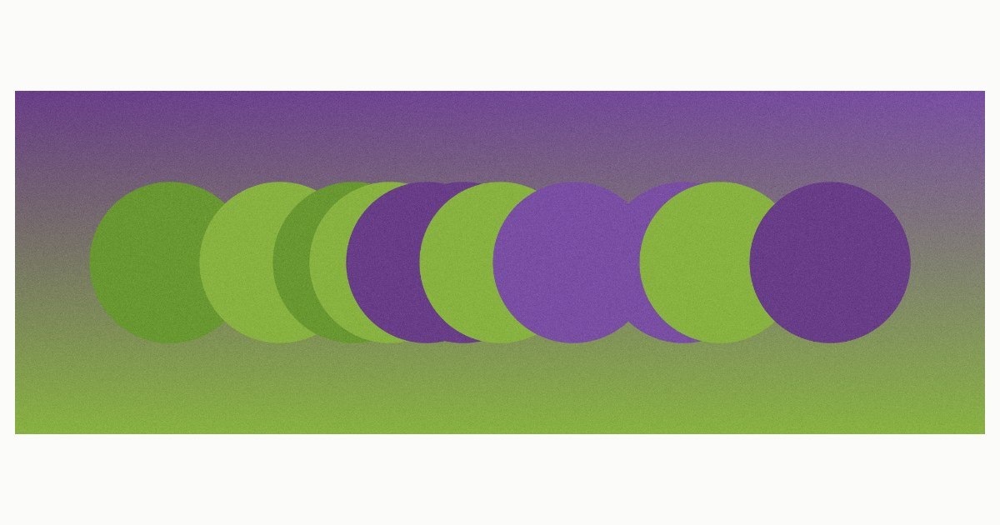

A single row of circles on one axis. The step between centres never changes; what changes is which of them are drawn. The grid stays perfect — the irregularity is all absence.
Una sola fila de círculos en un eje. El paso entre centros no cambia nunca; lo que cambia es cuáles se dibujan. La retícula sigue perfecta — la irregularidad es toda ausencia.
Zirkulu-lerro bakarra ardatz batean. Zentroen arteko urratsa ez da inoiz aldatzen; aldatzen dena da zein marrazten diren. Sareta perfektu jarraitzen du — irregulartasuna hutsune hutsa da.
The step between centres never changes. What changes is which circle falls silent. The lattice never breaks: the rhythm is made of absences.